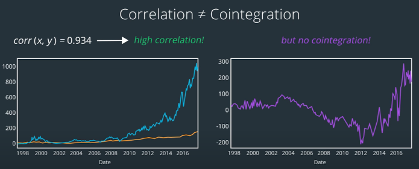
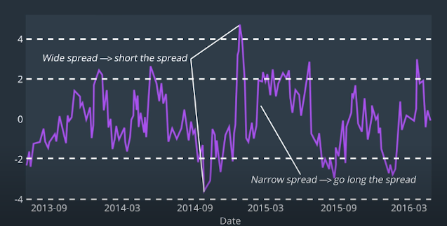

Pairs Trading
Table of Contents
1 Overview
- Finding Pairs
- Calculating Hedge Ratio
- Calculating Spread
- Is Spread Stationary?
- If Yes, candidate for Mean Reversion Trading.
- Choosing Thresholds for Spread
- If Spread widens/narrows, short/long the spread.
- Backtesting
2 Finding Pairs
Finding the economic links
- Government Policies
- Customers and suppliers with in the same supply chain
- Timezone Lag
Insights
- Looking for a time lag
Checking
- check if spread is stationary
3 Mean Reversion
A mean reverting time series is one that tends to move back and forth around some constant value.
3.1 Drift and Volatility
To describe a mean reverting process
- Drift Term
- Long Term Average
- Volatility Term
- Randomness
Formula: \[dp_t=p_t\mu dt + p_t\sigma\epsilon\sqrt{dt}\]
- \(dp_t\) represents the change in price over the time t
- drift term \(p_t\mu dt\)
- \(p_t\): current price
- \(\mu\): a constant average mu
- \(dt\): change in time
- volatility term \(p_t\sigma\epsilon\sqrt{dt}\)
- \(p_t\): current price
- \(\sigma\): a standard deviation sigma
- \(\epsilon\): a random noise factor
4 Hedge Ratio
Two ways to calculate the hedge ratio
- The Price Ratio \(\frac{B}{A}\): the price of stock B divided by the price of stock A
- Run a Linear Regression \(B=\beta A + \alpha\)
- Stock A is the independent variable.
- Stock B is the dependent variable.
- the coefficient \(\beta\) is the hedge ratio.
The difference is that the regression accounts for a series of previous prices.
5 Spread
- B and A are prices of two assets.
\[Spread = B_{actual} - B_{estimate}\] \[B_{estimate}=\beta A_{actual} + \alpha\]
- \(\beta\) is the hedge ratio
6 Cointegration
Two stocks \(y_t\sim I(1)\), \(x_t\sim I(1)\) Try linear regression: \[y_t\approx\beta x_t + \alpha\] \[Spread = y_t - \beta x_t\] \[Spread(with\_intercept) = y_t - (\alpha + \beta x_t)\]
- If spread is stationary, then Spread is I(0) and x, y are cointegrated.
- Hedge Ratio \(\beta\) is coefficient of cointegrated.
6.1 Cointegration \(\ne\) Correlation
- Cointegration means that, over a range of days, the relative increase in A is matched by a relative increase in B.
- A strong positive correlation means when stock A moves up stock B moves up at the same time and vice versa. (not measure the relative increase)

6.2 Test for Checking Cointegration
Two-Step Engle-Granger Test
- Get hedge ratio from a linear regression
- run a regression on one series against the other \(y_t=\beta x_t\)
- Create a new spread series \(z_t=y_t-\beta x_t\)
- Check if spread \(z_t\) is stationary
- if spread is stationary, the two series are cointegrated
Check If Spread is Stationary
Augmented Dickey-Fuller Test
- \(pvalue\le 0.05\): spread is stationary
# Augmented Dickey Fuller Test from statsmodels.tsa.stattools import adfuller # adfuller(x, maxlag=None, regression='c', autolag='AIC', store=False, regresults=False)[source] adf_result = adfuller(spread_series) adf = adf_result[0] pvalue = adf_result[1]
6.3 How to Find Cointegration Pairs
- Compare every pair of stocks in the universe: \(n\times n\) comparisons. (May use GPU)
- Group stocks by sector, industry…
- Use Clustering, a class of unsupervised machine learning algorithms.
- Inputs are time series.
7 Signals
- Principle: Buy Low Sell High: Buy when it's on sale, and sell when it's overpriced.

- Short the Spread
- Short the asset that has increased, long the asset that has decreased. (relatively).
- Long the Spread
- Short the asset that has increased, long the asset that has decreased.
7.1 Defining Thresholds
One way is to use the Z-score of the spread.
8 Variations
8.1 Group Pairs Trading
If we grouped the stocks within the same industry into a virtual portfolio and calculated the return of that industry, this portfolio return would represent the general expected movement of all stocks within the industry. Then, for each individual stock series, we can calculate the spread between its return and the portfolio return. So when the spread between the single stock and the industry changes significantly, we can use that as a signal to buy or sell.
Johansen Test
The Johansen test gives us coefficients that we can multiply to each of the stock series, so that a linear combination produces a number. \[w_1\times stock_1 + w_2\times stock_2 + w_3\times stock_3=spread\]
We get the historical average of the spread. Then we check if the spread deviates significantly from that average. We check whether each of the three individual series moved up or down significantly to result in the change in spread. We short the series that are relatively high, and long the series that are relatively low. To determine how much to long or short, we again use the weights that are given by the Johansen test \((w_1, w_2, w_3)\)
- Note that for the purpose of cointegration trading we use the original price series, and do not convert them to log returns.
Example
Let's say the spread has gotten larger. \(w_1=0.5\), \(w_2=0.3\), \(w_3=-0.1\)
- proportions: 5 shares for \(stock_1\), 3 shares for \(stock_2\), 1 share for \(stock_3\)
- If stock_1 stock is higher than usual (relative to the others), we short 5 shares of \(stock_1\) because we expect it should revert by decreasing relative to the others.
Details of Johansen Test
- Lesson 15
- 13. Details of Johansen Test
9 References
- Lesson 15
10 To Learn
- Lesson 15
- 7. ADF and roots